#01 · blender
Blender 輔助背景概念設計：從西部場景 Blockout 到 2D 完稿
概念藝術家 Ullaiin 示範先在 Blender 建立西部風格環境 Blockout，再繪製並整理成 2D 完稿；流程用三維空間協助背景透視與空間關係判斷。
 SOURCE PREVIEW
· Local visual evidence · 點圖開啟原始來源
SOURCE PREVIEW
· Local visual evidence · 點圖開啟原始來源
Blender ★★★★☆
完整分析
三維轉二維技術流程
示範先在 Blender 建立西部風格環境 Blockout，之後進入繪製階段並轉成完成的 2D 圖像，讓構圖與透視先有可調整的空間基礎。
背景設計製作影響
來源指出，把三維工具納入二維流程可協助理解透視與物件間的空間關係，也能降低從空白畫面直接建構環境的難度。
入門門檻與資訊限制
Blender 免費且教學資源多，但介面與大量快捷鍵仍可能讓新手不知從何開始；正文只概述影片內容，沒有提供速度比較或可量化成效。
BRIEF｜來源已驗證；證據深度較有限，完整分析會明確區分已知資訊與待驗證事項。
來源 ↗
#02 · blender
Filmic Plus：以單一 Blender 節點組合模擬底片顆粒、光暈與鏡頭效果
Filmic Plus 將 Fujifilm 風格預設、程序式顆粒、halation、bloom、耀光與暗角等底片後期效果整合進單一 Blender 節點組合，並提供逐項開關與微調控制。
 SOURCE PREVIEW
· Local visual evidence · 點圖開啟原始來源
SOURCE PREVIEW
· Local visual evidence · 點圖開啟原始來源
Blender ★★★★☆
完整分析
DCC 工作流
工具不是一包 LUT 或多個分散外掛，而是把底片模擬與鏡頭後期集中在單一節點組合；使用者可套用預設，再逐項開關及調整 bloom、halation、顆粒、暗角與耀光。
製作影響
程序式顆粒會在陰影較明顯、亮部逐漸淡出，並補上渲染器常忽略的反射、鬼影、色散與徑向光條；這讓外觀開發可在 Blender 合成階段集中完成，不必把每種效果拆到不同工具。
導入限制與驗證
目前是 Early Access，來源只轉述開發者以 Fujifilm X-T5 比對後得到相當準確的結果，沒有公開量測方法或跨鏡頭測試；導入時仍應以團隊自己的參考照片核對色彩與光學效果。
BRIEF｜來源已驗證；證據深度較有限，完整分析會明確區分已知資訊與待驗證事項。
來源 ↗
#03 · blender
Physical Atmosphere²：在 Blender 視窗即時調整四層程序雲與天空光照
Physical Atmosphere² 以四層可調程序體積雲建立日景、夕陽與星空，天空、光照和雲層會在 Blender 視窗同步更新；進階模式另開放散射、臭氧與霧等物理參數。
 SOURCE PREVIEW
· Local visual evidence · 點圖開啟原始來源
SOURCE PREVIEW
· Local visual evidence · 點圖開啟原始來源
Blender ★★★★☆
完整分析
渲染工作流
藝術家可分別調整四個程序體積雲層，拖動參數時即時看到雲、天空與照明變化；日期、時間及地點輸入則用來定位太陽與月亮，涵蓋白天、夕陽及夜空。
場景製作影響
雲與大氣不是平面背景，而會與場景物件產生遮擋和陰影；因此天空外觀與物件受光可在同一視窗中一起判讀，進階使用者也能直接控制散射、臭氧與霧。
導入限制與驗證
來源聲稱效果依據大氣科學並可即時渲染，但沒有列出 Blender 版本、硬體、解析度或幀率數據；正式場景仍需用目標 GPU、雲層設定及鏡頭距離實測效能與陰影品質。
BRIEF｜來源已驗證；證據深度較有限，完整分析會明確區分已知資訊與待驗證事項。
來源 ↗
#07 · blender
Blender 風格化毛髮與羽毛：以 Geometry Nodes 降低幾何負擔
SouthernShotty 的教學以 Blender 5.2 LTS 建立輕量 Geometry Nodes 系統，目標是不使用數百萬個高成本多邊形，也能在 Eevee 製作風格化毛髮與羽毛。
 SOURCE PREVIEW
· Local visual evidence · 點圖開啟原始來源
SOURCE PREVIEW
· Local visual evidence · 點圖開啟原始來源
Blender ★★★☆☆
完整分析
節點流程
教學使用 Geometry Nodes 生成毛髮或羽毛分布，並針對傳統散佈方式容易產生的硬陰影與視覺瑕疵調整，來源明確指出流程可在 Eevee 中運作。
外觀控制
流程包含細微動畫、隨機色彩與自訂 shader，用途涵蓋風格化角色、生物、舒適場景與 game-ready 資產；這些控制共同負責避免所有毛束呈現完全相同的外觀。
版本與限制
教學使用新發布的 Blender 5.2 LTS，但來源沒有公開節點數量、角色面數、顯示幀率或匯出到遊戲引擎後的成本，因此只能確認教學方向，不能宣稱任何特定效能提升。
BRIEF｜來源已驗證；證據深度較有限，完整分析會明確區分已知資訊與待驗證事項。
來源 ↗
#08 · blender
NOXIOUS 短片解析：在 Blender 結合投影貼圖、手繪紋理與線條
Kay Hilman 於 2026 年介紹畢業短片 NOXIOUS 的 Blender 製作過程，包含投影貼圖、自訂 Grease Pencil 流程、線條處理與製作範圍調整；作品本身是耗時兩年完成的 2024 年畢業專案。
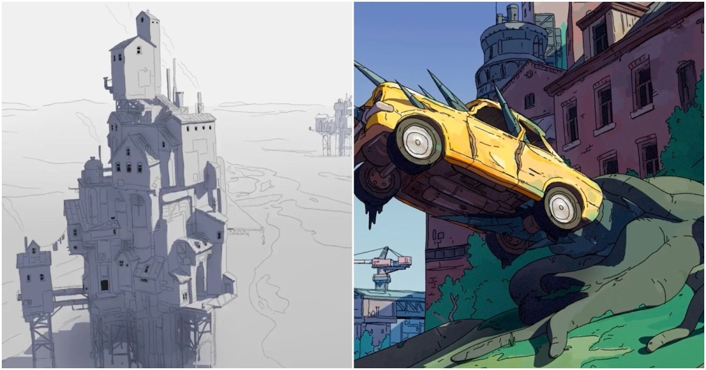
SOURCE PREVIEW
· Local visual evidence · 點圖開啟原始來源
Blender ★★★☆☆
完整分析
技術流程：投影與表面線條
解析涵蓋投影貼圖與自訂 Grease Pencil 工作方式；視覺部分還結合手繪紋理、文中所稱的 Outline 修改器，以及讓線條貼附表面的幾何節點技巧。
製作影響：視覺與聲音一起拆解
這支解析不只談畫面，也討論重新界定製作範圍及趕工；作曲者 Mikael Umarov 另有聲景與配樂段落。推論：它適合用來理解個人短片如何同時安排畫面技術與聲音合作。
日期與證據限制：作品早於解析
短片是 2024 年畢業作品，而本文是後來的製作解析介紹；不能把它寫成 2026 年才完成的作品。正文列出了技術組合，卻沒有完整節點參數，本文也不宣稱已重製其效果。
BRIEF｜來源已驗證；證據深度較有限，完整分析會明確區分已知資訊與待驗證事項。
來源 ↗
#09 · other-dcc
魚尾骨鏈以彈簧質點計算延遲、過衝與回穩，不需完整物理解算器
Shirzad Bahrami 公開 3ds Max 教學與腳本，以簡單物理和數學模擬魚尾波動：只驅動根骨，其餘骨骼依模擬端點的位置與速度形成連鎖動作。
 SOURCE PREVIEW
· Local visual evidence · 點圖開啟原始來源
SOURCE PREVIEW
· Local visual evidence · 點圖開啟原始來源
其他 DCC ★★★☆☆
完整分析
骨鏈運動技術流程
每根骨骼末端被視為連在彈簧上的小質點，彈簧把端點拉向剛性跟隨父骨時應在的位置，再把端點約束回原骨長。
旋轉計算製作影響
系統保存骨鏈靜止姿勢，為每根骨骼記錄模擬端點的位置與速度，最後計算使骨骼朝向該端點的旋轉，因此動畫師只需驅動根部。
解算範圍與限制
這套簡化設定能產生延遲、過衝和逐步回穩，不需要完整物理解算器；來源展示魚尾、繩索與頭髮類波動，未提供碰撞、效能或複雜肌肉處理資料，其他適用範圍仍待驗證。
BRIEF｜來源已驗證；證據深度較有限，完整分析會明確區分已知資訊與待驗證事項。
來源 ↗
#11 · blender
Blender 幾何冰塊：用內部尖晶與氣泡取代凹凸貼圖
Deepak Kushwaha 以 Geometry Nodes 在冰塊內散佈尖銳碎晶與氣泡，外殼只用簡單玻璃材質；調整內部結構密度即可改變清澈或混濁外觀，作者表示可用於 Cycles 與 Eevee。
 SOURCE PREVIEW
· Local visual evidence · 點圖開啟原始來源
SOURCE PREVIEW
· Local visual evidence · 點圖開啟原始來源
Blender ★★★☆☆
完整分析
幾何生成流程
系統先在立方體或其他幾何內散佈粒子，放入二十面體，再隨機配置不同尺寸及寬度的圓錐或三角形，形成尖銳裂紋感；另一組粒子則以位移、隨機變換與雜訊產生氣泡。
冰塊製作控制
外表面使用簡單玻璃材質，在 Eevee 透過折射顯示內部幾何；內部細節數量決定清澈與混濁程度，因此外觀調整集中在碎晶與氣泡的分布，而不只改表面凹凸。
效能限制與驗證
作者認為幾何方案比貼圖式方案輕，但文章沒有提供硬體、幾何數或渲染時間比較。這是作者經驗而非量化結論；若採用高密度內部碎晶，仍須另量測目標場景的幾何與折射成本。
BRIEF｜來源已驗證；證據深度較有限，完整分析會明確區分已知資訊與待驗證事項。
來源 ↗
#12 · blender
BGEN Hair：在 Blender 內完成髮型梳理、動態模擬與遊戲髮片輸出
BGEN Hair 把髮線分區、梳理、辮髮與 locs、重力模擬、烘焙及碰撞器整合成一套 Blender 流程，並可切換電影用髮絲、風格化管狀髮束或遊戲引擎用髮片。
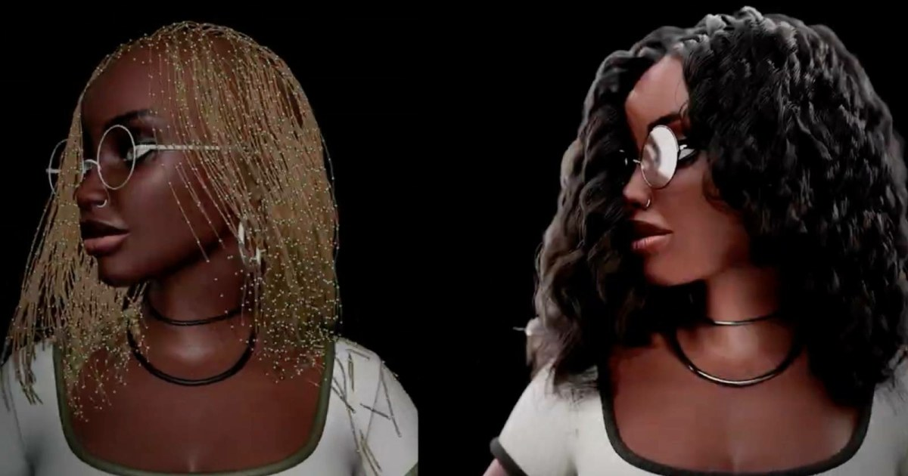
SOURCE PREVIEW
· Local visual evidence · 點圖開啟原始來源
Blender ★★★☆☆
完整分析
造型流程
使用者可直接在頭皮畫分線，再以 comb strokes 引導方向與輪廓；專用面板處理辮髮和 locs，也能在耳朵與頸部周圍建立 taper fade。
模擬與輸出
重力系統只模擬較輕的 guide，完整髮絲會在 viewport 即時跟隨，最後可用烘焙和 collider 完成渲染；工具另附八組 2K 髮片貼圖供遊戲引擎使用。
版本與限制
BGEN Hair 為一次性購買，支援 Blender 4.5 以上；它整合並取代 BGEN Groom、Flow 與 Card，但保留既有檔案相容性。來源沒有提供大型角色群或複雜碰撞場景的效能數據。
BRIEF｜來源已驗證；證據深度較有限，完整分析會明確區分已知資訊與待驗證事項。
來源 ↗
#13 · blender
歷史參考｜Blender 4.2 LTS：Eevee Next、Extensions 與矩陣節點
2024 年發布的 Blender 4.2 LTS 重寫 Eevee 即時算圖引擎，加入 Extensions 平台、Geometry Nodes 矩陣與視窗輸入，並讓 Collection 保存與批次執行多格式匯出。
 SOURCE PREVIEW
· Local visual evidence · 點圖開啟原始來源
SOURCE PREVIEW
· Local visual evidence · 點圖開啟原始來源
Blender ★★★☆☆
完整分析
算圖引擎技術更新
Eevee Next 由頭重寫，支援螢幕空間全域照明與真實位移，並改善次表面散射、體積與動態模糊；Cycles 同期加入 Ray Portal、薄膜干涉及體積光取樣改善。
節點與輸出製作影響
Geometry Nodes 新增矩陣 Socket、相關節點及視窗與滑鼠位置輸入；Collection 則能保存一個或多個匯出器及設定，並由 File 選單一次批次匯出。
擴充管理與歷史限制
Extensions 將 Add-on 與主題整合到可更新的平台，也保留離線安裝；網路存取為選用且預設關閉。這是 2024 年 4.2 LTS 資訊，不能代表 2026 年最新版狀態。
BRIEF｜來源已驗證；證據深度較有限，完整分析會明確區分已知資訊與待驗證事項。
來源 ↗
#14 · other-dcc
歷史參考｜2025 年 FumeFX 7.1 加速 Render Warps 並擴充 Alembic／VDB 交換
2025 年 FumeFX 7.1 重寫 3ds Max 的 Render Warps，官方稱標準 Modifier 約快五倍且結果更清晰；同版可直接以 Alembic 交換點雲與粒子，並簡化 Houdini、LiquiGen、EmberGen 的 VDB 匯入。
SOURCE PREVIEW
· Local visual evidence · 點圖開啟原始來源
其他 DCC ★★★☆☆
完整分析
模擬變形技術流程
算圖變形用於完成模擬後再做藝術導向變形，避免整段重算；7.1 重寫演算法，並針對彎曲、錐化、扭轉、傾斜與伸展等 3ds Max 修改器最佳化。
快取交換製作影響
NodeWorks 可直接透過 Alembic 輸出點雲與粒子形狀，送入 Houdini 時不必手動配對屬性；也能匯入 Houdini 或 LiquiGen 粒子，以及採用 Y 軸向上的 VDB 快取。
效能與平台限制
約五倍速度是來源針對標準 Modifier 的說法，FFD 仍用舊取樣演算法；液體模擬要求 NVIDIA Pascal 以上，且當時 Maya、Cinema 4D 版尚未升到 7。
BRIEF｜來源已驗證；證據深度較有限，完整分析會明確區分已知資訊與待驗證事項。
來源 ↗
#16 · blender
免費 Blender 節點工具：把毛髮曲線程序化轉成可動畫羽毛
Sherzod Kadirov 的免費工具以 Geometry Nodes 將 hair groom curves 轉為羽毛，支援自訂羽毛形狀、隨機或手繪分布、梳理控制與程序式著色，並以動畫角色為設計目標。
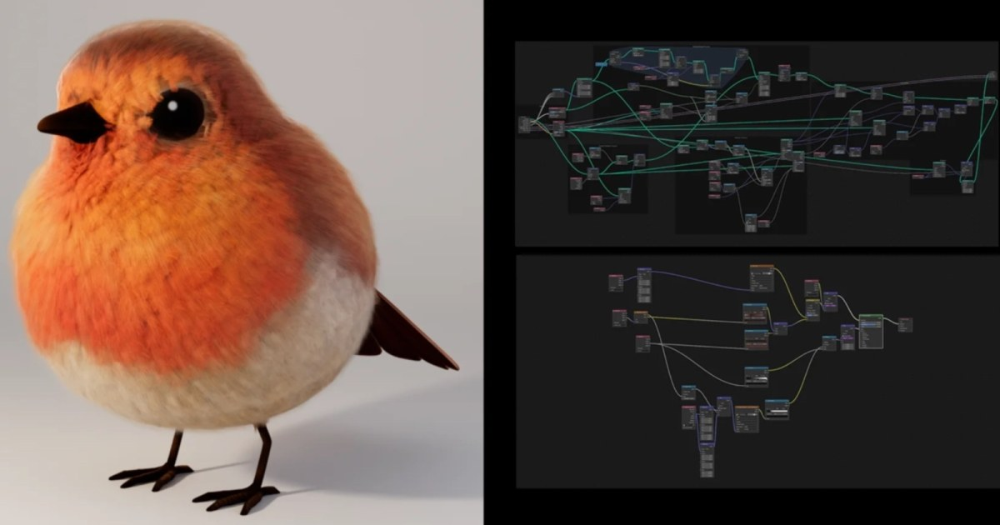
SOURCE PREVIEW
· Local visual evidence · 點圖開啟原始來源
Blender ★★★☆☆
完整分析
生成與分布
工具直接在角色表面梳理羽毛，可使用自訂羽毛形狀，並以隨機值或 painted variation 控制不同形狀的分布，避免所有羽毛使用完全一致的樣式。
外觀控制
使用者可調整羽毛長度、比例及與表面的對齊方式；程序式 shader 提供 base color、根部／末端 mask，並能為每片羽毛加入色彩變化。
開發狀態與限制
工具目前免費且目標是動畫角色，但開發者仍計畫增加控制項與功能。來源沒有說明碰撞、動力學、輸出格式或高密度羽毛的效能，因此這些能力不能視為已提供。
BRIEF｜來源已驗證；證據深度較有限，完整分析會明確區分已知資訊與待驗證事項。
來源 ↗
#23 · blender
歷史參考｜Blender 動態紋理筆刷：用影像序列改變每筆圖樣
2026 年 4 月介紹的 Animated Texture Brush，可在 Blender 貼圖、頂點繪製與雕刻筆刷中切換影像序列影格；作者也提供免費筆刷包，方便加入自然變化與手繪質感。
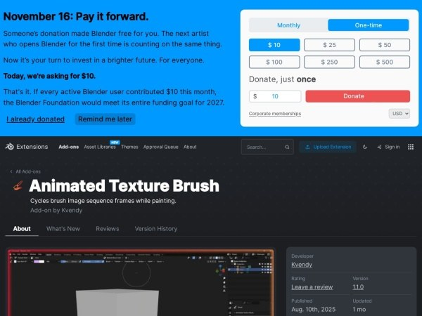
SOURCE PREVIEW
· Local visual evidence · 點圖開啟原始來源
Blender ★★☆☆☆
完整分析
貼圖技術：兩種影格更新模式
外掛替影像序列筆刷增加隨機影格切換：連續模式在繪製時即時更新，另一種模式則只在每次筆畫開始時更新一次，讓使用者選擇圖樣變化的頻率。
製作影響：有機表面的筆觸變化
原文把這種變化用於土壤、草木、岩石和風格化貼圖，藉微小隨機差異打破固定筆刷的單調外觀；推論：價值在同一筆刷內變換印記，而非自動生成完整材質。
導入條件：序列需放入正確槽位
筆刷須以影像序列設定紋理或遮罩紋理，原文建議至少四個影格以取得較佳效果，並需在 Blender 設定中啟用外掛；單張靜態筆刷不等同於已備妥該工作流程。
BRIEF｜來源已驗證；證據深度較有限，完整分析會明確區分已知資訊與待驗證事項。
來源 ↗
#24 · other-dcc
歷史參考｜照片轉材質服務：透視修正、去光照與雲端生成
2025 年的 V-Ray 7.1.2 for SketchUp 報導記錄雲端人工智慧材質生成器，可從實拍照片建立基礎色、法線與粗糙度貼圖；當時仍處於實驗性測試階段。
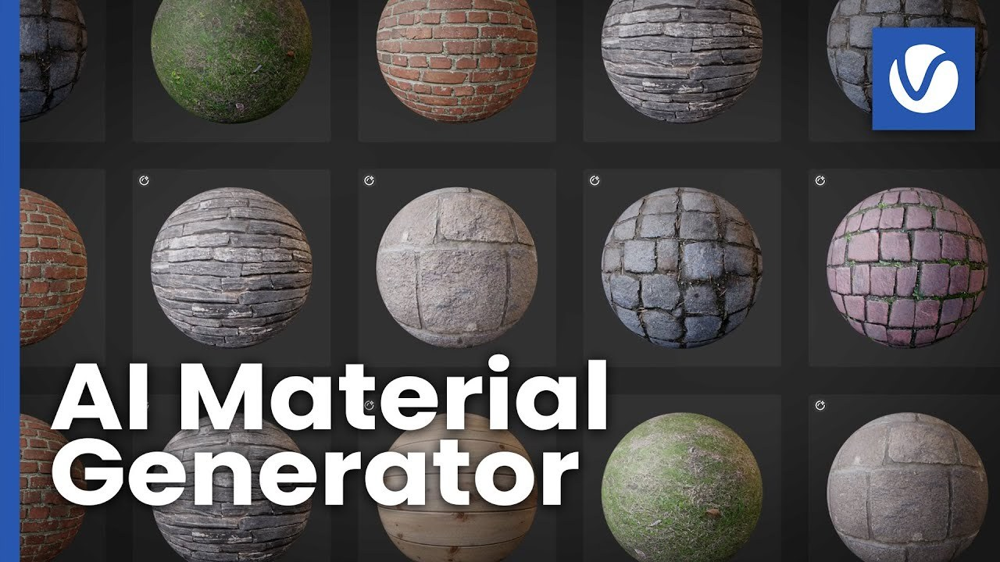
SOURCE PREVIEW
· Local visual evidence · 點圖開啟原始來源
其他 DCC ★★☆☆☆
完整分析
輸出貼圖的範圍
服務以真實參考照片產生三維材質及基礎色、法線、粗糙度貼圖。文章列出的是這三種貼圖，並沒有因此證明可重建照片中物件的完整幾何。
先處理照片中的干擾
使用者可以自行離線準備來源圖片，也可由生成器執行透視修正、去除光照及無縫平鋪處理。這些步驟針對來源照片轉成可重複使用材質時的問題。
當時的雲端限制
報導記載處理由雲端完成，當時最高解析度為 2K，且測試期間免費；廠商另稱部分進階功能正式推出後可能限制於較高方案，因此不能據此推定今日價格或權限。
BRIEF｜來源已驗證；證據深度較有限，完整分析會明確區分已知資訊與待驗證事項。
來源 ↗
#25 · blender
歷史參考｜Auto Car Animator：用 Geometry Nodes 控制車輛走向與漂移
2023 年 Auto Car Animator 以 Blender Geometry Nodes 建立車輛動畫，提供輪位與車身調整、最大漂移旋轉及滑移量控制，並以箭頭介面顯示前進和轉彎方向；當時支援 Blender 3.6x。
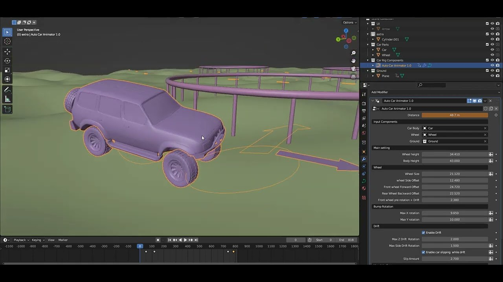
SOURCE PREVIEW
· Local visual evidence · 點圖開啟原始來源
Blender ★★☆☆☆
完整分析
車輛動畫工作流
系統將車輛 rig 與動畫控制包成 Geometry Nodes，來源表示可用簡單設定讓車輛動起來；輪位可自訂，車身會依輪位調整，不必先手動搭建傳統車輛綁定。
製作控制價值
藝術家可設定最大漂移旋轉與滑移量，取得所需漂移表現；箭頭式介面則標示行進和轉向方向，適合把操控重點放在走向及風格化行車鏡頭，而非複雜車輛力學。
歷史版本限制
來源明確評價車輛行為較簡單，不建議追求寫實者使用；這是 2023 年、Blender 3.6x 的外掛介紹，當時售價為 7 美元，不能推定後續 Blender 版本相容或具有物理精確模擬。
BRIEF｜來源已驗證；證據深度較有限，完整分析會明確區分已知資訊與待驗證事項。
來源 ↗
#26 · blender
歷史參考｜3D Hair Brush 4.6：Blender 髮層、子髮與曲線控制
2024 年的 3D Hair Brush 4.6 更新針對 Blender 4.1 新髮系統，集中髮層管理、子髮、長度／雜訊／聚束／重採樣修改器，以及粗細、曲線與髮束色彩分組控制。
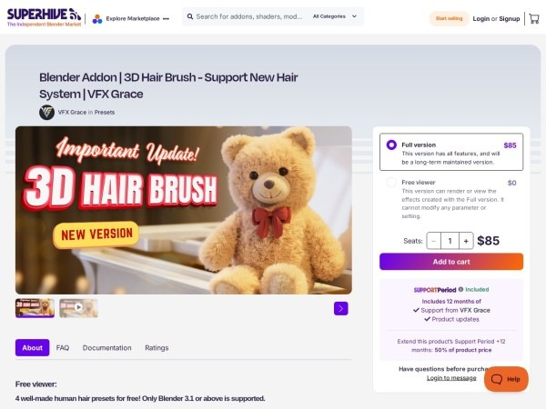
SOURCE PREVIEW
· Local visual evidence · 點圖開啟原始來源
Blender ★★☆☆☆
完整分析
毛髮工作流
新的髮層管理視窗可直接新增或刪除髮層，整合簡單及插值子髮；長度、雜訊、聚束與重採樣四種修改器也從同一介面存取，減少毛髮設定分散在多個位置的情況。
造型製作控制
髮形參數包含粗細、隨機粗細與曲線控制，色彩群組則用不同顏色區分毛束；更新另提供髮長、雜訊、聚束與插值相關幾何節點，讓梳理過程能按髮束管理和調整。
歷史版本限制
這是 2024 年對 Blender 4.1 的版本介紹，來源當時列價為 85 美元，沒有說明今日版本的支援狀況。若升級到其他 Blender 版本，需重新確認外掛與節點相容性，不能沿用當年的最新版本描述。
BRIEF｜來源已驗證；證據深度較有限，完整分析會明確區分已知資訊與待驗證事項。
來源 ↗
#27 · blender
歷史參考｜Blender 4.5 LTS：Vulkan、UV 顯示與 Grease Pencil 合成更新
2025 年 Blender 4.5 LTS 提供兩年錯誤修復支援，擴充 Vulkan、幾何節點資料匯入與自訂法線，讓各模式都能顯示 UV，並改善 Grease Pencil 分層合成及動畫 SVG 輸出。
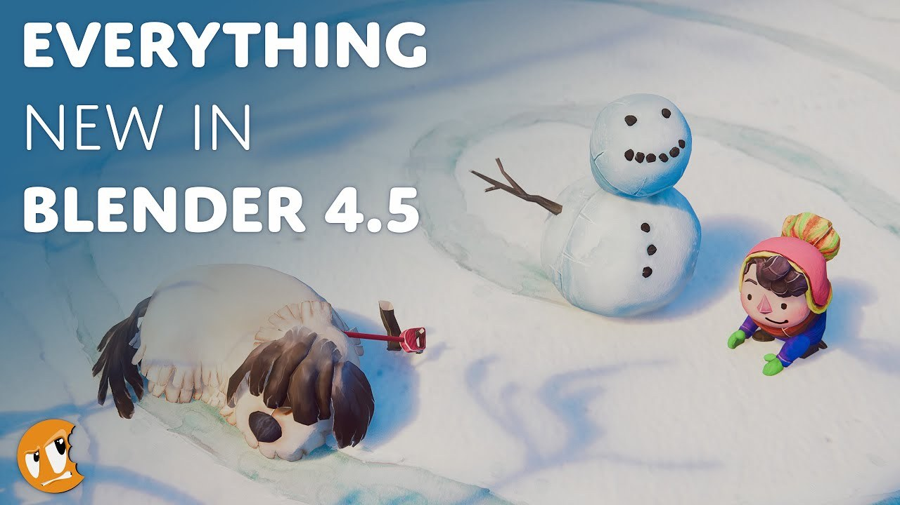
SOURCE PREVIEW
· Local visual evidence · 點圖開啟原始來源
Blender ★★☆☆☆
完整分析
幾何與貼圖工作流
幾何節點新增 CSV、PLY、OpenVDB、STL、OBJ 和文字匯入，以及 Set Mesh Normal 自訂法線；UV 可在各模式查看，透明度與可見性由 overlay 控制，不再只限編輯模式。
製作整合影響
Grease Pencil 可把描邊與填色分層交給合成器，支援 SSAA 和動畫 SVG 輸出；合成器亦可使用程序貼圖節點，Denoise 節點支援 GPU，讓二維筆觸與三維場景的後期整合有更多控制。
歷史版本與導入限制
這是 2025 年 7 月 LTS 發布紀錄，兩年支援代表持續修復錯誤，不是保證每個外掛都相容；Vulkan 當時未預設開啟，來源要求查看支援平台、驅動與限制，因此升級前仍需按目標硬體驗證。
BRIEF｜來源已驗證；證據深度較有限，完整分析會明確區分已知資訊與待驗證事項。
來源 ↗
#28 · maya
歷史參考｜MUTAN VTuber 製作書：設計、模型到 HumanIK 與 Unity Toon
2023 年出版的 MUTAN VTuber 製作書以書中 VTuber 角色為案例，涵蓋設計溝通、建模貼圖、Maya HumanIK 綁定與蒙皮，以及 Unity Humanoid 結構和 Unity Chan Toon Shader 2.0 外觀設定。
SOURCE CARD
· Generated source card · 點圖開啟原始來源
Maya ★★☆☆☆
完整分析
角色製作流程
章節從角色設定與設計師 NOCO 的往返溝通開始，接續臉部、全身、服裝及配件建模，解說 UV 展開與貼圖繪製，也記錄在有限工期內提升模型品質的回饋和調整。
引擎製作交接
綁定以 Maya 內建 HumanIK 為基礎，結構符合 Unity Humanoid，目標包含讓 VRChat 易於使用；shader 章節則從 Unity 資料準備一路到 Unity Chan Toon Shader 2.0 的最終外觀。
歷史教材限制
這是 2023 年 8 月 31 日出版、440 頁的紙本教材，不是新版軟體功能公告；來源沒有說明今日 Unity、VRChat 或 shader 版本相容性，也沒有列出可下載的完整角色資產，不能將目錄當成現成管線交付物。
BRIEF｜來源已驗證；證據深度較有限，完整分析會明確區分已知資訊與待驗證事項。
來源 ↗
#29 · blender
歷史參考｜Android 手機即時控制 Blender 相機並烘焙關鍵幀
2025 年資料介紹 Camera Controller：把 Android 手機感測到的旋轉與移動資料即時送入 Blender，相機動作可錄製並烘焙為關鍵幀，也可用雙搖桿控制平移與高度。
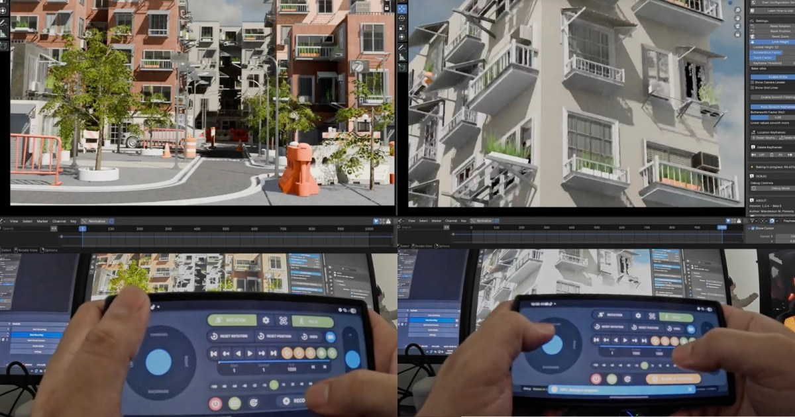
SOURCE PREVIEW
· Local visual evidence · 點圖開啟原始來源
Blender ★★☆☆☆
完整分析
手機相機控制流程
外掛讀取手機實際移動與旋轉資料，在 Blender 即時模擬手持相機晃動，並能在錄製後把動作烘焙成動畫關鍵幀。
平移與旋轉製作方式
一組搖桿處理前後與左右平移，另一組控制高度；也可傳送啟用中相機的旋轉或移動資料，或只在指定動畫區段加入手機旋轉。
平台與範圍限制
正文明確指出相機控制外掛只支援 Android，並另有手機控制物件的配套外掛；2025 年來源沒有提供延遲、追蹤精度或目前版本資訊。
BRIEF｜來源已驗證；證據深度較有限，完整分析會明確區分已知資訊與待驗證事項。
來源 ↗
#30 · blender
歷史參考｜Blender 插畫著色器：隨光向與強度變化，保留材質配色
2026 年 5 月，Iro Ikyu 展示可產生手繪插畫外觀的 Blender 著色器，並提供以 Blender 5.1 重建效果的逐步說明；材質會回應光線方向與強度，但不反映燈光顏色。
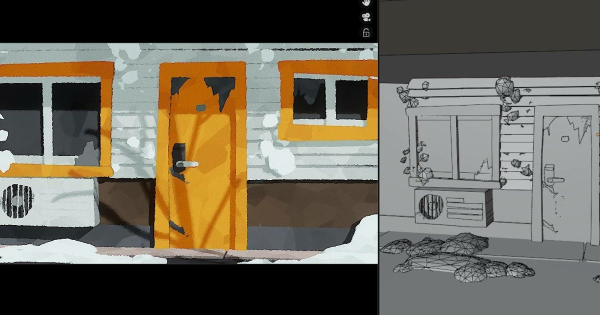
SOURCE PREVIEW
· Local visual evidence · 點圖開啟原始來源
Blender ★★☆☆☆
完整分析
著色技術：區分光照與色彩
這個著色器會隨光源方向和強度動態變化，卻不反映光源顏色。兩種光照屬性被分開處理，是本文可明確確認的風格化設計特點。
製作影響：插畫感與動態受光
作者將材質用在角色上，並分享逐步重建方式。推論：若目標是維持插畫配色，同時讓形體明暗跟隨燈光，這種對光色不敏感的設計具有具體參考意義。
導入限制：不適合照搬彩色照明需求
來源教學基於 Blender 5.1，且明示材質不反映燈光顏色；推論：需要霓虹燈染色或多彩燈光敘事的鏡頭，不能期待直接套用便獲得一般材質的色光反應。
BRIEF｜來源已驗證；證據深度較有限，完整分析會明確區分已知資訊與待驗證事項。
來源 ↗